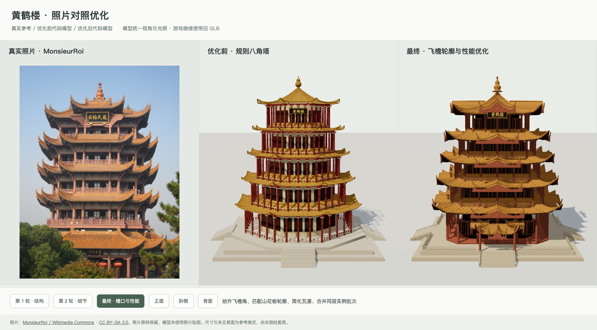

黄鹤楼 · 实景对照优化记录
2026 年 10 月 7 日 · 北京时间 15:46:10—16:38:12。旧游戏 GLB 保留，新版模型独立保存在 huanghe-tower-code 文件夹。
照片 / 技能准备17 分 52 秒
几何优化15 分 18 秒
渲染 / 视频 / 验证18 分 52 秒
本轮总历时52 分 2 秒
以上为阶段标记之间的实际墙钟时间，包含阅读、等待与工具执行。几何优化时间不包含前期下载，也不包含后续视频制作。
修改过程视频 · 第 4 版
参考项目中另一份《优化过程.mp4》的米白背景、宋体标题、铜金细线与单主体展示。开场实景参照，中段单塔持续旋转并渐变，19–22 秒平滑展开为双塔对照；最后 8 秒的旋转轨迹和速度保持不变。本次呈现改版耗时 21 分 36 秒，查看记录。上方时间卡片保留初版建模与制作记录。
30 秒 · 1920 × 1080 · 24 fps · 720 帧 · H.264 MP4 · 无旁白。沿用 v3 的模型渐变，只更改视频布局与光照；所有保存阶段和旧游戏模型保持原样。切换新版与上一版对照。
真实照片、优化前与最终模型

离线交互对比页 · 在线阶段对比页 · 完整记录 JSON · UTC 时间标记
三轮修改
- 将规则八角楼体改为折角方形，重建五层比例、四面骑楼与复合飞檐。
- 增加瓦垄、回纹栏杆、斗拱近似构件、门窗格栅、绿色额枋、匾额和入口雨棚。
- 校正翘角和山花板轮廓，简化瓦垄曲面并合并同层实例批次。
| 阶段 | 三角面数（含实例） | 网格批次 |
|---|
| 优化前代码模型 | 57,320 | 2,258 |
| 第 1 轮：结构 | 51,872 | 213 |
| 第 2 轮：细节 | 299,064 | 366 |
| 最终：檐口与性能 | 109,560 | 114 |
实际使用的技能与验证
第 3 版额外参考 threejs-animation 的 Morph Targets 与平滑插值，以及 threejs-shaders 的 uniform 和混合着色器方式。实现保存在 morph-transition.js。
- img2threejs：reference observation, spec, material evidence, strict validation, comparison sheet, deterministic diagnostic
- threejs-geometry：BufferGeometry surface normals, InstancedMesh batches, Lathe/Tube geometry
- gpt_3d_skill：semantic scene tree, source isolation, multiple views and offline HTML handoff; Blender not executed
严格规格校验通过；几何独立性、五层主屋面、51.4 米高度、三角面预算及旧模型加载检查通过。离线页无外部请求，阶段切换、正背面、重置与照片放大均可用。第 3 版原生解码抽查 2、4、5、6、10、15、20、22、27、29 秒画面，并检查渐变边界的中间帧和相机速度连续性。
第 4 版逐帧生成 720 帧，完整解码无错误；成片抽查 0、4.9、10、15.2、20.5、22、27 秒。新旧版切换、拖动播放与手机无横向溢出检查通过；旧模型及保存阶段 SHA-256 保持一致。成片验证记录。